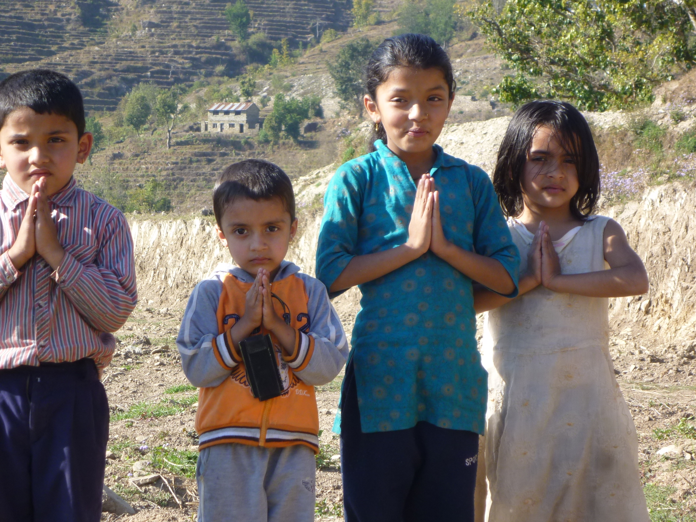
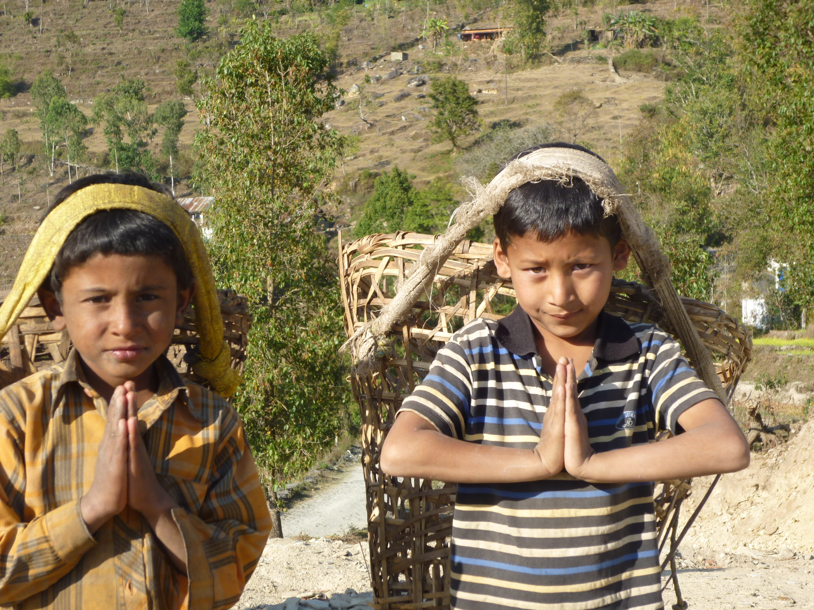
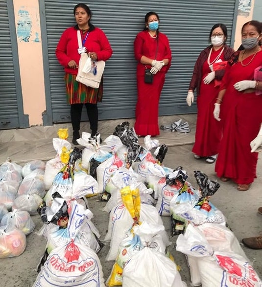
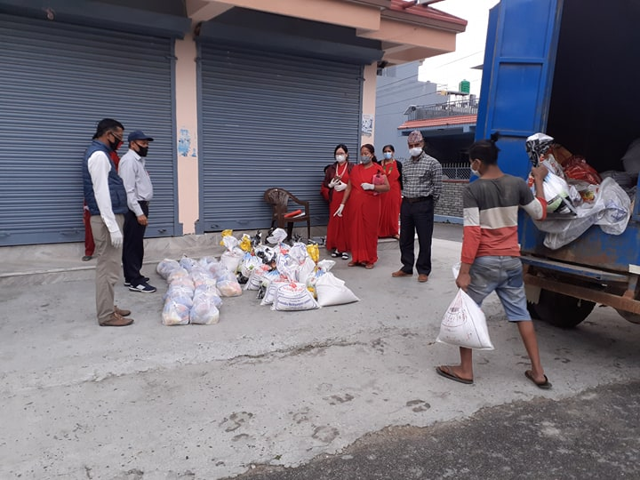

Waarom het corona noodfonds?
Net als Europa en de rest van de wereld is Nepal economisch diep in zijn ziel geraakt door de maatregelen rondom het coronavirus.
Na de aardbeving in 2015 komt deze crisis extra hard aan. Nepal is al wekenlang volledig in lockdown om een verdere verspreiding van het coronavirus in te perken. Arme Nepalezen die dagloner zijn, komen direct in de problemen omdat levensmiddelen voor hen onbetaalbaar zijn. Nu ze geen werk hebben en er geen vangnet is waar ze op terug kunnen vallen, zijn de problemen niet te overzien.
 
Bovendien dreigt een recessie van ongekende omvang en er wordt gevreesd voor een torenhoge werkloosheid. Nepal moet het vooral hebben van het toerisme en de gelden die binnenkomen via in het buitenland woonachtige Nepalezen. Beide bronnen van inkomsten vallen geheel weg.
Nepal heeft niet voldoende ziekenhuiscapaciteit om een eventuele uitbraak het hoofd te bieden en er is bovendien een groot tekort aan middelen als mondkapjes, paracetamol en desinfecterende handgel.
Voor wie en hoe komt het terecht?
Door de strenge maatregelen van de overheid moet iedereen binnen blijven. Vooral de arme Nepalezen zijn hier slachtoffer van geworden. Ze hebben geen werk, geen geld en dus ook geen eten en medicatie en krijgen geen hulp van de overheid. Er dreigt een humanitaire ramp te ontstaan onder de arme en dakloze bevolking.


To be a good person is the destiny of every human being!
Vooral de arme Nepalezen zijn slachtoffer van de lockdown. Ze hebben geen werk, geen geld en dus ook geen eten en medicatie en krijgen geen hulp van de overheid. Er dreigt een humanitaire ramp te ontstaan onder de arme en dakloze bevolking. Met het coronafonds voor Nepal willen we in eerste instantie de getroffen kansarme bevolking uit afgelegen gebieden helpen met levens- en hygiënische middelen. We zullen in de tweede instantie kijken of we ze kunnen helpen met een duurzaam bestaan. Daarbij denken we aan het helpen vinden van nieuw werk of helpen opzetten van een eigen bedrijf.
NDA en stichting Nepalfonds hebben het Coronafonds Nepal in het leven geroepen welke nauw samenwerkt met lokale partners in Nepal. De lokale partners werken op hun beurt met de lokale autoriteiten van Nepal samen om dit project uit te voeren.
Hoe kunt u helpen?
U draagt Nepal altijd al een warm hart toe waar we zeer dankbaar voor zijn. Ook nu is uw steun meer dan welkom!
U kunt uw bijdrage overmaken naar:
NL83INGB 0005652171 t.a.v.: stichting Nepalfonds o.v.v. CoronaNepal
Uw steun in aanmerking voor belastingaftrek omdat
Stichting Nepalfonds is door de belastingdienst aangemerkt als Algemeen Nut Beogende Instelling (ANBI).
Contact
Stichting NDA
2e Oosterparklaan 157
3544 AP Utrecht
Tel.: 06-48182704
Tel.: 06-48182704
www.coronafondsnepal.nl
Namaste & hartelijk dank voor uw steun!